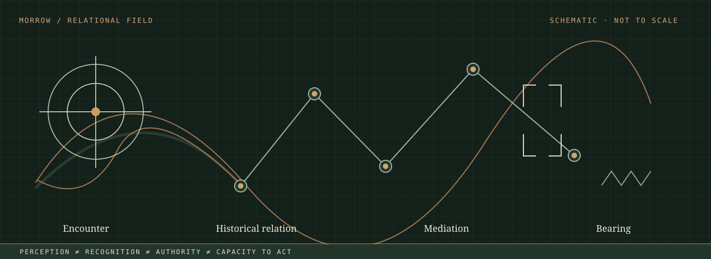
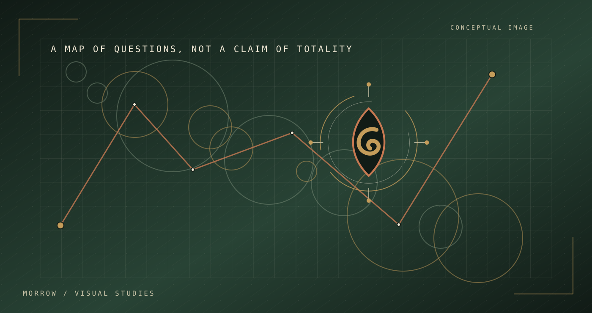

Relation · route
Lines join different locations or actors only where an actual relation is evidenced. A dotted line denotes an open question, not a factual route.
Visual design for Morrow must not decorate the philosophy with generic symbols. It should help visitors investigate how objects, places, times, evidence and authority enter relation. Each image is a question-making device, not historical evidence.

Lines join different locations or actors only where an actual relation is evidenced. A dotted line denotes an open question, not a factual route.
Frames show which instrument, institution or category makes something available for recognition and which parts remain outside the frame.
Asymmetric shapes indicate uneven support, labour or exposure. The label must identify the measured burden before a visual can claim unequal distribution.
The visual family for the manuscript's restricted fetish-space-time proposal joins three recurring forms. A ring enclosing an apparent independent object asks how value or identity was produced. A layered grid or route asks how colonial and postcolonial geographies participated in its formation. Repeated offset forms ask how historical arrangements recur or change through time. Together, they suggest a diagnostic question—not a settled universal explanation.

Use: accompany a specific object, place and time with evidence. Avoid: treating every object as fetishistic, or making a colonial map stand for a neutral view of land.
The Obeah visual grammar will pair contradictory kinds of evidence: official legal classification, surviving archival traces, practitioner accounts where permission is held, and fields that remain unavailable. It must not assign one invented sacred mark or generic occult motif to every Caribbean spiritual tradition.

Solid border and source identifier only where a real document can be cited. No fabricated archive numbers or invented historical stamps.
Offset border and linked note indicate the researcher's reading. A source can resist, contradict or fail to support it.
Interrupted aperture indicates what is not available for extraction, whether missing evidence or ethically protected knowledge. These are different conditions and should be labelled.

Five fields are linked through declared questions and documented disagreements. A scholar's work is always identified by title, date, intervention and limits. A visual connection denotes an interpretive research question, not proof that the two scholars agree.